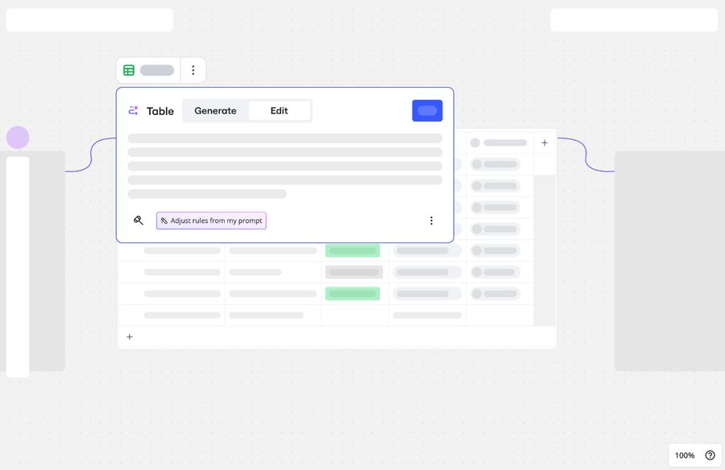

Flows: Continuous Research
One of the most loved features in the portfolio
A weekly research rhythm that shifted product development from speculation to validated decisions, turning Flows into one of the most loved features in the portfolio.

Situation
The Flows flagship feature was evolving rapidly — both conceptually and within the UI — but users struggled with discoverability, distinguishing key AI-driven capabilities, and completing fundamental tasks like iteratively refining output without starting over. One-off, ad-hoc studies were insufficient to keep pace with development; the team needed a continuous, structured feedback loop connecting research, audits, prototypes, and the product backlog. A central goal was research democratization: standard methodologies, structured templates, and enablement frameworks so cross-functional partners could directly engage in user discovery alongside dedicated UX research support.
Task
Establish and lead an ongoing research program structured as a weekly recurring rhythm, empowering design, product management, and engineering to independently run user research and prototype testing with continuous guidance and hands-on enablement. Through this scalable model, systematically diagnose value-proposition and discoverability gaps, prepare testable UIs and AI-assisted specifications, evaluate interactive prototype directions — global execution controls, dynamic connectors, free-form spatial canvases, rule-based logic, content locking — and translate insights into crisp, actionable weekly and sprint takeaways.
Approach
Regular weekly testing sessions used high-fidelity prototypes and AI tooling to generate specs and UI states, in close partnership with stakeholders across process management, engineering, product design, and strategic innovation — evaluating canvas connector flows, free-form multi-output generation, and iteration patterns. The product delivery lifecycle evolved around this rhythm as cross-functional teams collaboratively prepared test setups, executed sessions, iterated on design specs, and shipped validated features every cycle.
Result
Validated breakthroughs emerged clearly: global execution controls (running a full canvas flow versus just selected steps) became a key interaction model, free-form canvas output meaningfully boosted productivity, and rule-based logic alongside content locking validated real granular-editing needs. Along the way, design iterations addressed directional affordance gaps, step-execution highlighting, discovery pathways, terminology alignment (standardizing “step” language against visual output objects), state persistence during regeneration, zoom readability, and complex canvas data integrations. The lasting impact was a living backlog and an evidence-gated rhythm that shifted product development from speculative iteration to validated prototype decisions — and through that continuous model, the feature became one of the highest-rated and most loved products in the entire portfolio.
Methodology
Continuous discovery, prototype testing, UX audit, and community feedback synthesis, running on a research-ops cadence with transcripts and videos living on the research board. The Staff-level signal here is treating research as product process, not a phase gate.
Skills demonstrated: Qualitative synthesis (diary studies, interviews), Research-ops & infrastructure, Stakeholder communication